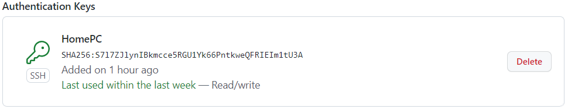
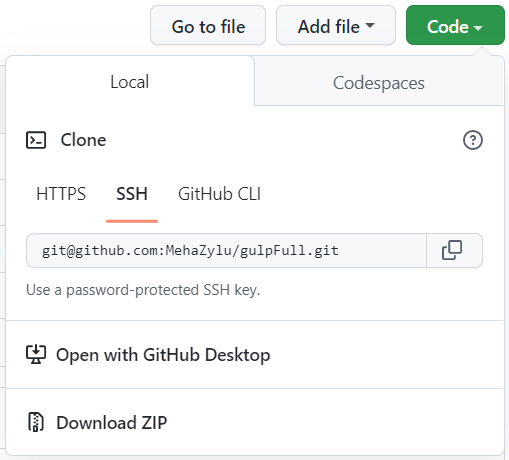

Работа с GitHub
Скачиваем Git
Git для Windows - git-scm.com
Проверяем установку
Открываем cmd и вводим команду:
git --version
Если Git установлен, то появится номер версии.
Настраиваем Git
Теперь нужно ввести имя и адрес электронной почты, чтобы наши действия в Git были подписаны, а ещё для привязки к GitHub.
Добавить имя (введите его внутри кавычек):
git config --global user.name "ваше имя"
Добавить электронную почту (замените email@example. com на вашу почту):
git config --global user.email email@example.com
Опция --global значит, что имя и почта будут использоваться для всех действий в Git.
Регистрируемся на GitHub
Устанавливаем SSH-ключи
Чтобы получить доступ к проектам на GitHub со своего компьютера и выполнять команды без постоянного ввода пароля, нужно, чтобы сервер нас узнавал. Для этого используются SSH-ключи.
SSH — протокол для безопасного соединения между компьютерами.
SSH-ключ состоит из двух частей — открытого и закрытого ключа. Открытый ключ мы отправляем на сервер. Его можно не прятать от всех и не переживать, что кто-то его украдёт, потому что без закрытого ключа он бесполезен. А вот закрытый ключ — секретная часть, доступ к нему должен быть только у нас. Это важно.
Чтобы подключиться к GitHub с помощью SSH-ключа, сначала нужно его создать.
Проверяем SSH-ключи
Перед созданием нового SSH-ключа проверяем, есть ли на компьютере другие ключи. Обычно они лежат в папке с
названием
.ssh (C:\Users\MehaZylu\.ssh) — поэтому посмотрим, есть ли в ней что-то, с помощью команды в терминале Git Bash:
ls -al ~/.ssh
Создаём новый SSH-ключ
Открываем Git Bash и пишем команду:
ssh-keygen -t ed25519 -C "почта"
ed25519 — это алгоритм для генерации ключей.
Терминал спросит, куда сохранить ключ. Если не нужно менять имя файла, которое предлагает терминал, просто нажимаем Enter.
Теперь нужно добавить пароль, которым будет зашифрован ключ. Это стоит сделать, иначе в дальнейшем могут быть проблемы с настройкой, да и так просто безопаснее.
В результате создаётся новый SSH-ключ, привязанный к электронной почте.
Добавляем SSH-ключ в ssh-agent
ssh-agent — программа для хранения и управления SSH-ключами. Нужно запустить её и добавить наш SSH-ключ.
Открываем Git Bash и пишем команду:
eval "$(ssh-agent -s)"
Если в ответ терминал покажет надпись «Agent pid» и число — значит, всё ок, агент запущен.
Теперь добавим наш ключ командой:
ssh-add ~/.ssh/id_ed25519
Если у ключа другое имя, заменяем название id_ed25519 именем файла с ключом (это правило применяется и дальше в инструкции). Если устанавливали пароль на ключ, вводим его два раза после ввода команды ssh-add (терминал подскажет, когда это сделать).
Теперь, если всё хорошо, появится надпись Identity added — значит, можно переходить к добавлению ключа на GitHub.
Копируем SSH-ключ
Чтобы добавить ключ на GitHub, нужно сначала его скопировать из вашего файла.
Открываем Git Bash и пишем команду:
clip < ~/.ssh/id_ed25519.pub
Меняем название если нужно
Ключ не появится на экране, но он скопируется в буфер обмена, и его можно будет вставить на Гитхаб.
Показать ключ в терминале
Открываем Git Bash и пишем команду:
~ cat ~/.ssh/id_ed25519.pub
Меняем название если нужно
Добавляем SSH-ключ на GitHub
Переходим на страницу для работы с ключами - github.com/settings/keys.
Нажимаем кнопку New SSH key
В поле Title нужно добавить название нового ключа. А ключ, который мы скопировали, в поле Key.
Нажимаем кнопку Add SSH key
Если всё сделано верно, новый ключ появится в списке на странице.
Теперь мы можем поработать с проектом в репозитории.
Создаём репозиторий на GitHub
Клонируем его в папку на компьютере, для этого нужно будет скопировать SSH репозитория.

Открываем Git Bash в нужной папке и пишем команду:
git clone SSH
Вместо SSH пишем скопированный с GitHub SSH
Добавляем файлы проекта в папку которая создалась при клонировании репозитория.
Теперь поработаем с файлами
Добавить файлы в список отслеживания
git add
Есть ряд специальных символов, которые позволяют упростить процесс работы с файлами: Специальный символ * означает любую последовательность символов.
- — git add * добавит в список отслеживаемых файлов все файлы в текущем каталоге и подкаталогах
- — git add . работает анлогично первому способу
- — git add *.js добавит в список отслеживаемых файлов все файлы с расширением .js в текущем каталоге и подкаталогах
Добавляем коммит
git commit -m ""
Важно запомнить: команда git commit фиксирует только те изменения, которые были добавлены в staging area через git add. Поэтому если сначала сделать git add, а затем изменить его и сделать git commit , то последние изменения не зафиксируются.
Отправляем файлы в удалённый репозиторий
git push origin main или просто git push